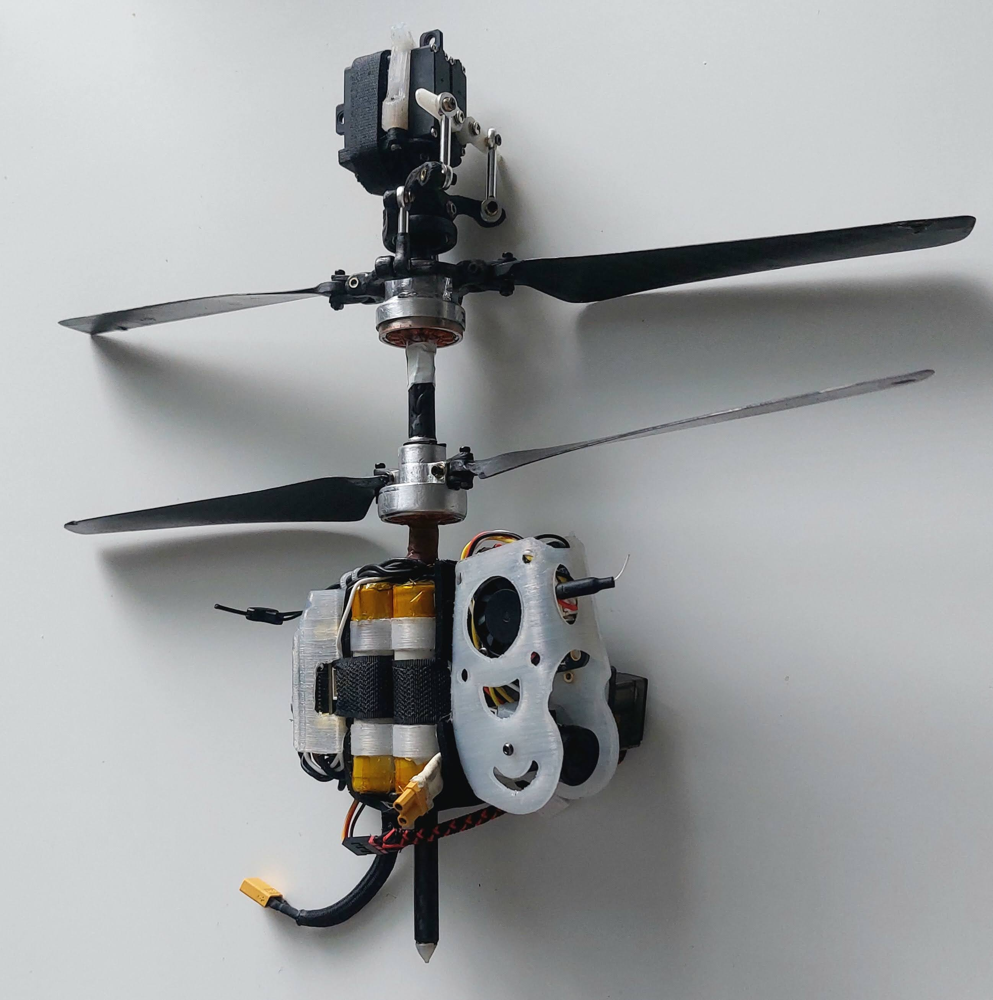

Overview
This page presents the build of my coaxial helicopter project for a job application. The main goal has been to learn carbon-fiber and aluminium part manufacturing and to study the behaviour of helicopter rotors and brushless motors driving them
I have manufactured all the mechanical components used in this build myself, apart from bearings, ball links, servos and the laminated steel stator cores of the motors.
- Coaxial rotor with a fixed mast, where the 340 mm rotor blades are mounted directly to motors without gears.
- The upper rotor uses a swashplate with cyclic pitch control for roll/pitch authority. Yaw is controlled by motor torque differences.
- INAV firmware.
- Digital OpenIPC video link.
- Specifications:
- Mass: 510 g (including battery 220g and digital OpenIPC video module 70g)
- Flight time: 35 min of cruising around, using the OpenIPC video module
- Battery: 3 Ah 4s 18650 Li-ion
